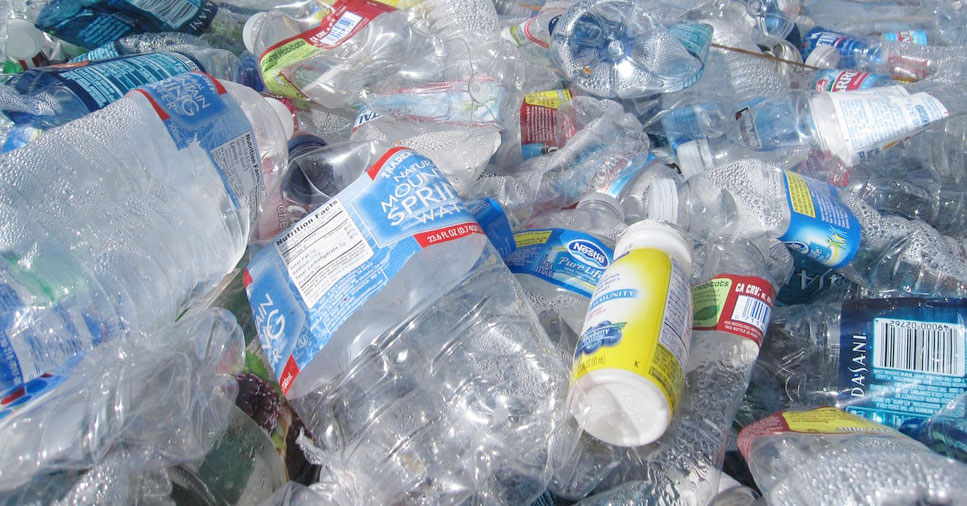

Pengelolaan Limbah Plastik

Langkah-Langkah Pengelolaan Limbah Plastik
- Mengurangi penggunaan plastik
- Menggunakan kantong belanja yang dapat digunakan kembali
- Menggunakan botol air yang dapat digunakan kembali
- Menggunakan produk yang memiliki kemasan minimal
- Mengolah limbah plastik menjadi produk yang berguna
Manfaat Pengelolaan Limbah Plastik
- Mengurangi polusi lingkungan
- Menghemat sumber daya alam
- Mengurangi biaya pengelolaan limbah
- Meningkatkan kesadaran lingkungan